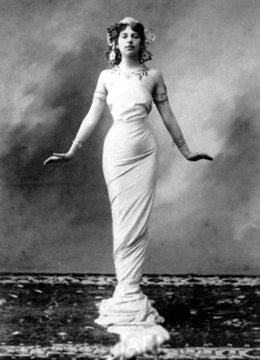

“Kendi kendine çok eğlenebilen bir kadınım.
Bazen kaybeder, bazen de kazanırım.”
Mata Hari
Tarihteki en ünlü kadın casuslardan biri olmasına rağmen, başarılı olmaktan çok uzaktı. Aslında saf ve kolayca kandırılabilir, tuzağa düşürülebilir birisiydi.
Şöhreti bulması çok ironik oldu. Belki başarılı diye nitelendirilebilecek bir kariyeri yoktu; ama hakkındaki efsaneler gerçekliği sorgulanmadan kabul görecek ve onu belki de hiç olmadığı bir noktaya taşıyacak, kadın casus denince akla gelen ilk isim olmasıyla, bu kitaptaki yerini de garantileyecekti.
Tarihin akışı açısından sıradan, geriye bıraktığı miras açısından ise dünyanın en ünlü casuslarından biri olan Mata Hari’nin hayatı ve maceraları, bugün kendisini 20. yüzyılın ilk ve en tehlikeli kadın casusu olarak gören insanları düşündürmeye devam ediyor. O halde buyurun, okuyalım.
Hayat değiştiren gazete ilanı
Hollanda’nın Leeuwarden bölgesinde 7 Ağustos 1876’da dünyaya geldiğinde, Margaretha Geertruida Zelle ismiyle vaftiz edilmişti. Ailesi, dindarlık ve tüccarlığı aynı potada eritmiş Kalvinistlerdendi. Hali vakti yerinde bir şapka satıcısı olan babası başka bir kadın için evi terk edip, annesi de bu olaydan kısa bir süre sonra öldüğünde, genç kız, hayatın tüm zorluklarıyla karşı karşıya kaldı.
Mart 1895’te, 19 yaşındayken Het Nieuwes van den Dag gazetesinde gördüğü bir ilan, hayatını değiştirecekti: İskoç kökenli Hollandalı Yüzbaşı Rudolf MacLeod 20 yıldır Hollanda’nın sömürgelerinden Endonezya’da yaşıyor ve kendisine uygun bir eş arıyordu.
Bu o zamanlar için oldukça yaygın bir uygulamaydı. İlan yayınlandığında MacLeod, sıtma hastalığından yeni kurtulmuş, Amsterdam’da iyileşmeye çalışıyordu. Aslında ilan, gazetede çalışan ve Yüzbaşı MacLeod’un yakın arkadaşı olan muhabirlerin şakasıydı. İlana 16 kişi cevap verdi. Margaretha bunların sonuncusuydu. Cevabına iliştirdiği fotoğraf, yüzbaşının dikkatini çekmişti.
İlk randevuları, aralarındaki 21 yıllık yaş farkına rağmen romantik bir havada geçti. Birbirlerine çok sayıda mektup yazdılar (MacLeod, mektupları daha sonra Hollandalı muhabirlere satacaktı). Kısa sürede evlendiler ve biri erkek biri kız, iki çocukları oldu. Aile, 1 Mayıs 1897’de Endonezya’ya giden Prenses Amalia isimli gemiye binerek, yeni bir hayata doğru yelken açtı. Buraya kadar her şey normaldi. Margaretha milyonlarca ev kadınından biriydi. Şimdilik...
Asya’da filizlenen yeni bir kimlik
Güneydoğu Asya’daki Endonezya, sadece birkaç yıllığına çiftin yuvası olacaktı. İlerleyen yıllarda MacLeod’un aynı bölgedeki değişik noktalara peş peşe tayin edilmesi, Asya ikliminden kaynaklanan hastalıklar ve bu arada oğullarının ölümü, evliliklerini dayanılmaz hale çevirmişti. Genç kadının hayal ettiği hayat, hiç de bu yaşadığına benzemiyordu! Margaretha Avrupa’ya, özellikle Paris’e dönmek istiyordu. Eşine olan aşkı, büyük bir olasılıkla, MacLeod’un emekli olmasıyla bitmişti; zira artık üzerinde şatafatlı bir üniforma yoktu.
Aile Amsterdam’a döndü. Fakat MacLeod bu ilişkiden çok yorulmuştu ve ailesini bırakıp kaçtı. Margaretha kızının velayetini üzerine aldı ve çocuğu akrabalarına bırakıp, rotasını Paris’e çevirdi. Bir daha arkasına bakmamak üzere...

Doğu egzotizmini Batı’da pazarlamasıyla ilgi çeken Mata Hari,
aslında pek de başarılı bir dansçı değildi.
Güzelliğini kullanmaya başladı
Paris’e vardığında güzelliğinin işe yarayacağını fark etmesi uzun sürmedi. Bir artistin yanında model olarak çalışmaya başladı. Ancak yaşayabilmek için yeterli parayı kazanamıyordu, Hollanda’ya dönmek zorunda kaldı. Lahey ve Amsterdam’da sıkıntılı bir dönem geçirdi ve yine Paris’e geçti. Ancak bu sefer talihliydi. Lahey’in önde gelen zenginlerinden Baron Henry de Marguire ile tanışmış ve onun himayesine girmişti. Ve ardından pahalı elbiseler, takılar gelmeye başladı. Henry, Margaretha’yı Paris’teki Grand Hotel’e yerleştirdi, cüzdanını genç kadının hizmetine sundu. Margaretha, baronu kullanmaya kararlıydı.
Lahey’de ilk önce binicilik öğretmeni olarak iş buldu ve sirklerde gösteriler yapan bir ekibe katıldı. Boş olduğu vakitlerde ekipteki Ernest Molier isimli bir arkadaşından dans dersleri almaya başladı. Bu esnada, Margaretha ismini de daha havalı olacağı gerekçesiyle Marguerite olarak değiştirdi.
O dönem Paris’te Doğu egzotizmi bir hayli popülerdi. Güney Asya’da bir süre yaşayan Margaretha da bu kültürden etkilenmişti. Endonezya ve civarında geçirdiği 5 yıl boyunca edindiği kültürel birikimi ve burada öğrendiği geleneksel java danslarını, egzotik güzelliğiyle birleştirerek, döneme hâkim olan havadan faydalanmaya karar verdi. Dansı beceremiyordu; ama yine de doğal bir zarafete sahipti. Güneydoğu Asya’da gördüğü dans şekillerine dayalı, en azından Avrupalılar için tamamen farklı bir tarz oluşturmaya çalıştı. Hollandalı köylü kızı, bambaşka bir kişiliğe dönüşüyordu...
Dansçı ve zenginler için hayat kadını
Başlangıçta etrafındakilere Javalı bir Budist rahip ile Hollandalı bir kadının kızı olduğunu söylüyordu. Sonradan köklerini Hollandalı önemli bir koloni yetkilisine dayandıracaktı. Ancak ilk sahne performansında kendisini ‘Lady MacLeod’ olarak tanıtmıştı. Soranlara babası MacLeod’un bir İngiliz aristokratı, annesinin ise kendisine Hindu tapınaklarında dans öğreten bir Hintli olduğunu söyledi. Bu yeni kimliğini oluşturma sürecinde, yalan söyleme konusunda oldukça rahat davranıyordu. (Hayatını konu alan ‘Mata Hari: Gerçek Hikâye’ isimli eserde Russel Warren, Margaretha’nın yalanlarını sıralarken hiçbir sorunla karşılaşmadığını, çünkü Avrupalıların çoğunun, Endonezya adalarıyla Hindistan’ı birbirine karıştırdığını aktarır)
Margaretha, izleyenlere değişik gelen gösterisiyle, Doğu Sanatları Merkezi Guimet Müzesi’nin sahibi Emile Guimet’in dikkatini çekmeyi başardı. Mata Hari’ye dönüşmesindeki son adım olan Guimet, müzede dans etmesi teklifinde bulundu. Ancak ne eski orijinal ismi, ne de yeni aristokratik lakabı, bir Hindu tapınak dansçısı açısından gerçekçi görünüyordu. Sonunda Endonezya’da konuşulan Java dilinde ‘günün ışığı’ ya da ‘günün gözü’ anlamlarına gelen Mata Hari’de karar kılındı.
Guimet müzeyi, Hinduların yıkım ve yeniden üretim tanrısı Şiva’nın heykelinin de yer aldığı bir şekilde dekore etti. Yanan bir kâse, 4 farklı dansçı ve mumlar yerleştirildi. Mata Hari, müzenin koleksiyonundan emanet alınmış, tiril tiril, transparan şallı ve dansını biraz daha erotik hale getiren bir elbise ile izleyicilerin karşısına çıktı. Seyirciler, daha önce böyle bir şey izlememişler ve Mata Hari’nin egzotik ve bir o kadar da erotik figürleri tarafından büyülenmişlerdi. Mata Hari’nin şöhreti, kısa sürede Paris’ten taşıp Avrupa’ya yayıldı. Rus ve Fransız aristokrasisinden büyük elçiler de dâhil olmak üzere çok sayıda üst düzey yetkili, hayranları arasına girdi. Ve tahmin edileceği üzere, bu cebi dolu, yakası süslü hayranları için sadece dans etmekle yetinmiyordu...
Her ne kadar şöhreti, ‘sanatsal kılıflarla’ tüm Avrupa’da haklı gösterilmeye çalışılsa da işin gerçeği farklıydı. Dans şekli ona, Avrupa’nın en bilinen soylu metresi ve fahişesi unvanını kazandıracaktı. Yıllar sonra hakkında yazılan ‘Şafağın Çocuğu’ başlıklı bir makalede Mata Hari’nin geldiği nokta “Birinci Dünya Savaşı’na ramak kala Mata Hari; askerlerin, devlet adamlarının, dünyanın her yerindeki siyasi aktörlerin cüzdanlarında ve gönüllerinde dans edecek yolu bulmuştu” ifadesiyle tanımlanacaktı.
Neredeyse on yıl süren bu ‘dansözlük’ serüveni boyunca, savaş bakanlarından bankacılara, asillerden orta kademe subaylara kadar, oldukça geniş bir yelpazeye yayılan bir hayran kitlesi edinmişti. Lakin ilerleyen yaşı, sahne kariyerini tehdit etmeye başlamıştı. Kariyerinin sonlarına yaklaştığı 1914 yılında 38 yaşındaydı. Yine de İngiliz Daily Telegraph gazetesi, onu “maun kırmızısı saçlı, uzunca boylu, 35-40 yaşları arasında, oldukça güzel bir kadın” olarak betimliyordu. Açıkçası, en güzel zamanları geride kalmıştı, birçok genç rakibi türemişti. Belki farkında değildi ama kendisini, çok ama çok farklı bir dünya bekliyordu; tehlikeli bir dünya...
Acemi casus işbaşında
Casusluk dünyası, ‘genç ve güzel’ kadınları yem olarak kullanmak konusunda her zaman cömert davranmıştı ve Mata Hari de konumu ve bağlantılarıyla bu iş için biçilmiş kaftandı. Almanlar Mata Hari’yi bir şekilde Alman Gizli Servisi’ne angaje ettiler. Birinci büyük savaş patlak vermeden birkaç yıl önce dansçı Mata Hari, Löerrach şehrindeki Alman İstihbarat Okulu’nda casusluk eğitimi almaya başlamıştı. Kendisine H21 kodu verildi. Eğitimin ardından, 1915’te, görev sahası Fransa’ya döndü. Bu kez dans eder gibi görünüp, bilgi toplayacaktı. İlginçtir, Fransız Gizli Servisi, Mata Hari’nin Almanlar hesabına çalıştığını fark etmişti ama kadının hem Fransız hem de Hollanda hükümetlerindeki sağlam bağlantıları, kendisini dokunulmaz kılıyordu. Bu arada suçüstü yapılabilecek bir açık da vermiyordu. O halde yapılabilecek tek şey vardı: Mata Hari’yi çift taraflı ajan olarak kullanmak.
Kendisine Almanların lehine çalışıyormuş gibi davranmaya devam ederek, aslında Almanya’ya ihanet etmesini ve perde arkasında Fransızlara çalışmasını teklif ettiler. Mata Hari teklife olur verdi, lakin Fransızların, bu kadının güvenilirliği hakkında tereddütleri vardı. Bu yüzden Mata Hari’yi sınamak için Belçika’ya gönderdiler. Orada altı Fransız ajanla bağlantıya geçecekti. Fransızlar, istediklerini kısa zamanda acı bir şekilde öğrendiler: İki hafta gibi bir sürede söz konusu altı ajan Almanlar tarafından yakalanarak kurşuna dizildi. Mata Hari, danslarında olduğu kadar başarılı olamamıştı casusluk işlerinde. Aslına bakılırsa dansları için de aynı şey söylenecekti yıllar sonra.
Fransızlar Mata Hari’yi gözden çıkarmışlardı, ama Fransızlara büyük bir darbe vurmalarına yardım ettiği Almanlar da ona şüpheyle bakmaya başlamıştı. Bugün Fransa’yı satan, yarın Almanya’yı da satabilirdi. Yine de Mata Hari’yi el altında tutmaya karar verdiler. Öte yandan İngiliz gizli servisi de bir süredir Mata Hari’yi izliyor ve onun aslında Clara Benedix isimli bir Alman casus olduğundan şüpheleniyordu. Kadını, 1916 Kasımı’nda sorgulamalarına rağmen, casusluk yaptığına ilişkin bir delil bulamamışlardı.
Gözden düşen Mata Hari, Fransa’ya dönmek zorunda kalmıştı. Bu arada Fransızlar, savaştaki tüm başarısızlıklarını fatura edecek bir günah keçisi bulmuşlar, neredeyse bu beceriksiz dansöz-casusun tüm Fransa’yı batırdığını iddia etmeye başlamışlardı. (Bir bakıma Mata Hari’yi efsane haline getirerek, şu anda hayatını okumanızın da zeminini oluşturuyorlardı!) Buna karşın tüm öfkeleri üzerinde toplayan bu kadına, yine sağlam bağlantılarından dolayı dokunulamıyordu. Hakkında güçlü bir delil olmaması da cabasıydı. Yine de bu deliller için fazlaca beklemelerine gerek kalmayacaktı.
Yıllar sonra Cambridge Üniversitesi’nden Profesör Christopher Andrew’un kendisi hakkında sarf edeceği ‘Birinci Dünya Savaşı patlak verdiğinde Mata Hari, casusluğu bir fantezi olarak benimsemişti’ cümlesiyle işaret ettiği gibi, rahat durmaya pek niyeti yoktu. İstihbaratın tozunu yutmuştu bir kez; ya da bu dünyanın deyişiyle, ‘Bir kez casus olan, her zaman casus kalır’dı.
Dişiliğiyle tuzağına düşürdüğü Fransız, İngiliz, Rus kurbanlarından elde ettiği gizli bilgileri şifreleyerek, güya kızına yazdığı mektuplar kisvesiyle, Almanlara ulaştırmaya devam etti. Ama halen acemiydi.
Alman istihbaratçılarla görüşmek üzere gittiği Madrid’de Alman askeri ataşesi Binbaşı Kalle ile tanışmıştı. Kalle, Berlin’e müttefiklerinin okuyabileceği kodda bir mesaj yolladı. Mesajda casus ‘H-21’in değerli bilgilerle kendisini ispatladığını söylüyordu. Ancak mesajı okuyan, sadece Berlin’dekiler değildi. Paris’tekilerin gözü de Mata Hari’nin üstündeydi ve Kalle’nin mesajını deşifre etmişlerdi.
Paris’e dönen Mata Hari, Elysees Sarayı Oteli’nde tutuklandı. Evinde yapılan aramalarda bulunan yüklüce miktardaki Alman markını, ‘aşk’ karşılığı aldığını iddia etse de Fransızlar bunu ‘casusluk ödemesi’ olarak değerlendirmeyi tercih edeceklerdi. Arama esnasında bulunan görünmez mürekkep de Mata Hari’nin ‘Hayır! Bu bir makyaj malzemesi!’ itirazlarına rağmen, deliller listesine kaydedilmişti. Zaten fırsat kollayan Fransızlar, Mata Hari’yi büyük bir iştahla tutukladılar.
Tutuklanışı propaganda aracı olarak kullanıldı. 50 bin Fransız askerin ölümünden sorumlu tutuluyordu! 1915’in Aralık ayına kadar Almanlara yaptığı 8 casusluk faaliyetinden dolayı yargılandı. Aslına bakılırsa Fransızlar Mata Hari’yi, tabiri caizse, önce asıp sonra yargılamışlardı! Suçlu bulundu. Kurşuna dizilecekti.
Bu arada vatandaşı Mata Hari’nin serbest bırakılması için temyiz başvurusunda bulunan Hollanda Kraliçesi’nin isteği reddedildi. Almanların Fransızlara yönelik esir değişimi teklifi de kabul görmedi. İdam kaçınılmazdı.
Gözlerinin bağlanmasını veya bir kazığa bağlanmayı reddeden Mata Hari, 15 Ekim 1917’de, 41 yaşındayken, idam mangasının tüfeklerinden çıkıp, sabahın sessizliğini dağıtan mermilerle yaşamını yitirdi.
Daha kanı kurumadan, ‘Fransa’yı mahveden kadın casus Mata Hari’ söylentisi de dalga dalga yayılmaya başlamıştı. Bir rivayete göre son sözleri ‘Merci monsieur’ oldu. Bir başka rivayete göreyse kurşunlar bedenine girmeden önce üzerindeki elbiseyi çıkarmış ve çırılçıplak bir şekilde ‘Evet fahişeyim, ama hiçbir zaman hain olmadım!’ demişti.
Fransızların bu idamı, o dönemde gündemi değiştirmek için kullandığı söylendi, ancak dava hakkındaki resmi bilgiler 100 yıllığına mühürlendiği için olayın aslı bugün halen gizemini koruyor.
Mata Hari’nin cenazesine sahip çıkan bir yakını olmadı ve cesedi muhtemelen tıbbi araştırmalar için kullanıldı. Başı gövdesinden ayrılıp mumyalandı ve Paris’teki Anatomi Müzesi’ne konuldu. Ancak 2000 yılında araştırmacılar, Mata Hari’nin gerçek kafasının muhtemelen 1954’te, müzenin yeri değiştirildiği sırada kaybolduğunu ileri sürdüler. Resmi kayıtlarda müzenin Mata Hari’nin cesedini de teslim aldığı ortaya çıktı, ancak akıbeti konusunda bir bilgi bulunamadı.
Çifte ajan olarak çalışan, askeri sırları elde etmek için erkekleri baştan çıkaran egzotik bir dansçı olduğu düşüncesi, efsane olmasına ve tarihin ‘femme fatale’ (ölümcül dişi) isimlerinden birine dönüşmesine yetti.
Pek çok tarihçi, Mata Hari’nin, oynamaya çalıştığı oyunun ciddiyetinin farkına varmadığı konusunda hemfikirdir. Dünyevi zevkleri heyecanlı ve gizemli olduğuna inandığı casusluk oyunuyla harmanlamaya kalkışmış, bedelini de kanıyla ödemişti.
Her ne kadar tarih ve popüler kültür, onu bir efsane olarak sunsa da 20. yüzyılın sonlarında çok sayıda tarihçi amatör bir casus, hatta casus olmayı becerememiş bir dansöz ve son kertede de şöhretinin kurbanı olmuş bir kişi olarak tanımlayacaktı Mata Hari’yi. Yine de kim ne derse desin, doğru ya da yanlış, kadın casuslardan bahsedildiği sürece, Mata Hari efsanesi yaşamaya devam edecek.
NOTLAR